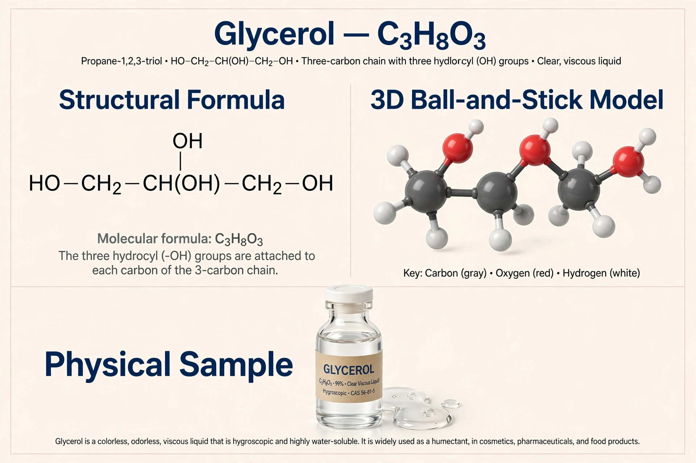

| Formula | C3H8O3 |
|---|---|
| Molar mass | 92.09 g/mol |
| Appearance | Colourless, viscous, hygroscopic liquid |
| Density | 1.26 g/cm³ |
| Melting point | 17.8 °C |
| Boiling point | 290 °C |
Glycerol (also called glycerine or glycerin; IUPAC name propane-1,2,3-triol) is a simple triol compound. It is a colorless, odorless, viscous liquid that is sweet-tasting and non-toxic. The glycerol backbone is found in lipids known as glycerides. It is widely used in pharmaceutical formulations, foods, and personal care products.
Glycerol is obtained mainly as a by-product of saponification and of biodiesel production, in which triglycerides are split into fatty acids or fatty-acid methyl esters plus glycerol — roughly 10% of the output by weight. The biodiesel boom created a large surplus of crude glycerol. It can also be synthesised from propylene, and is formed in fermentation in small quantities (it contributes to the body of wine).
The molecule consists of a three-carbon chain bearing three hydroxyl groups, making it fully miscible with water and hygroscopic. In biology, glycerol links fatty acids in triglycerides (fats and oils) and forms the head-group backbone of many phospholipids in cell membranes. The body metabolises glycerol via glycerol kinase into the glycolysis pathway.
Glycerol was discovered in 1779 by Carl Wilhelm Scheele, who isolated it from olive oil; Michel Eugène Chevreul later named it from the Greek glykys, "sweet". Its industrial importance grew when Nobel's dynamite created huge demand via nitroglycerin production.
See also: Explosive · Nitric oxide · Triglyceride · Biodiesel